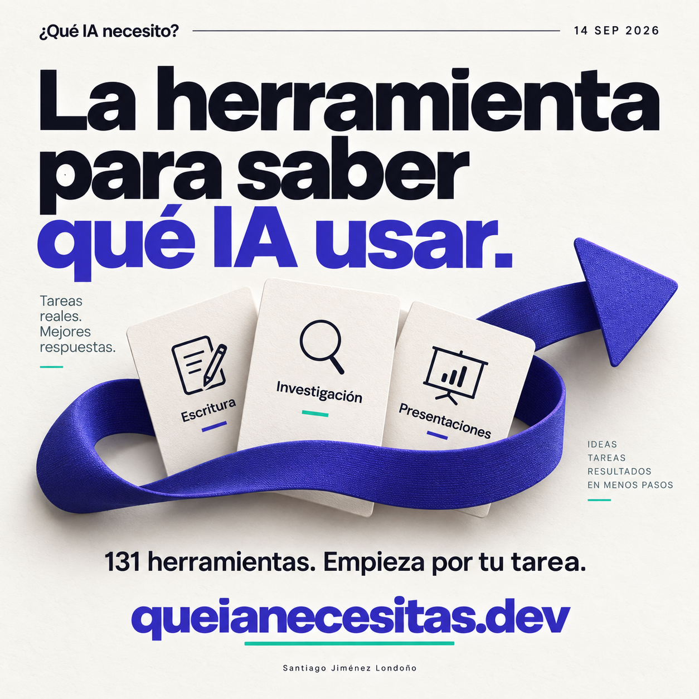
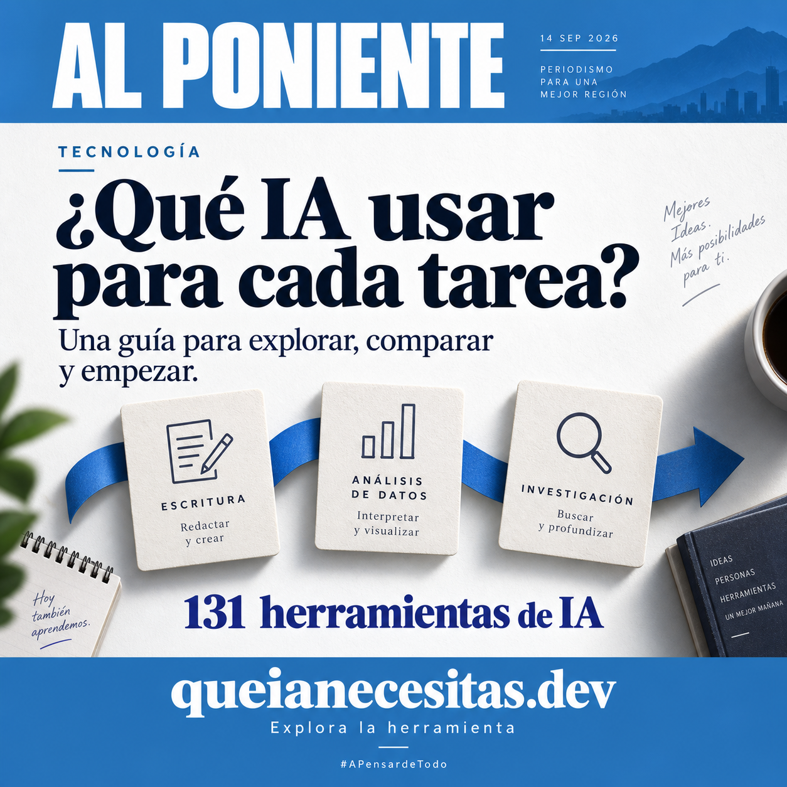
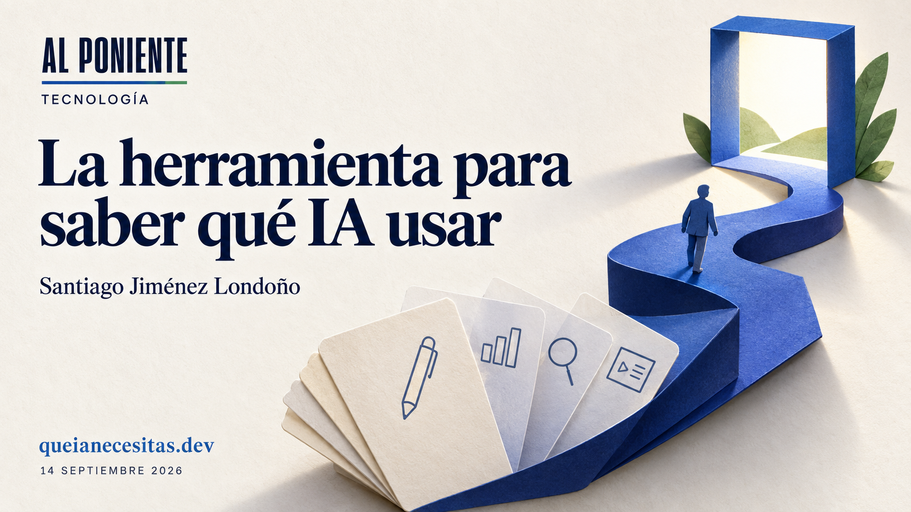

La herramienta para saber qué IA usar.
Tres piezas gráficas, un boletín de prensa y textos para Instagram, con referencias a las funciones verificadas en queianecesitas.dev.
Instagram · La herramienta

Instagram · Al Poniente

Portada · Al Poniente
